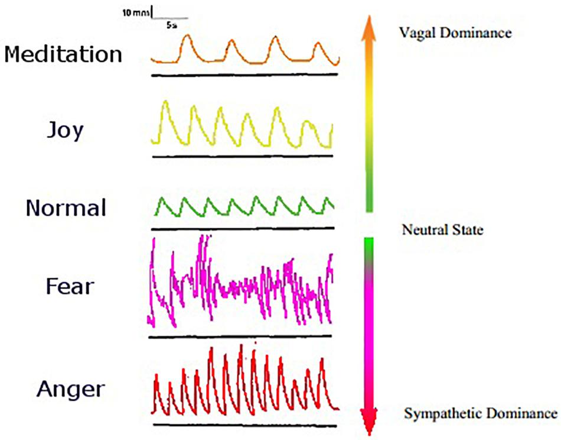

Kaj Sotala writes:
Usually, most of us are - on some implicit level - operating off a belief that we need to experience pleasant feelings and need to avoid experiencing unpleasant feelings. In a sense, thinking about getting into an unpleasant or painful situation may feel almost like death: if we think that the experience would be unpleasant enough, then no matter how brief it might be, we might do almost anything to avoid ending up there.
There’s a sense in which this is absurd. After all, a moment of discomfort is just that - a moment of discomfort. By itself, it won’t do us any lasting damage, and trying to avoid can produce worse results even on its own terms.
Indeed, the attempt to avoid unpleasant feelings might actually cause more damage than the actual event we’re trying to avoid. Similarly, the anticipation of pleasant feelings might actually be more attractive than the actual act which we’re craving.
To avoid living in future, the wise people recommend to live in the moment — in the present moment. No one really teaches how; just lectures how that it’d be a wise decision.
A simple to state but hard to follow method to live in the present is to observe the present moment, whatever is happening in the present moment. The object of observation could be anything as long as it is occurring in the present moment. Watching a river flow, listening to the wind, working on a tough problem, etc.
One such event that is constantly happening at any given moment is our breath, respiration. We inhale oxygenated air and exhale carbonised air. Respiration is a process that’s always with us as long as we are alive. (The origin of the phrase “As long as I breathe”.)
Therefore, respiration is one process that will always be with us, in the moment, no matter what.
There are two types of nervous systems in humans: autonomic nervous system (involuntary) which function without our explicit instructions and somatic nervous system (voluntary) which function with our explicit instructions. Most nervous system functions fall into one of these two categories. However, there is a third category, sort of like a bridge between the two which is involuntary but can also be controlled by us.
Breathing is a primary example: we can breathe fast or slow, deep or shallow, but even if we don’t make any effort, we continue to breathe. Other examples include blinking, swallowing, etc.1 Additionally, how we breathe is highly dependent on our state of mind at any moment. If we are angry, our breath would be faster. If we are afraid, our breath would be erratic.
 > Affective states are shown here alongside the dimension of respiratory rhythm. Source: Jerath, R., & Beveridge, C. (2020).
Therefore, observing breath offers a direct view into our mind, which is critical for introspection.
At this point, let’s take a brief look at what is the mind. (Spoiler: it is more than the brain or the heart.) A human mind, called Manas (मानस or मन) in Hindi/Sanskrit/Pali, is a complex interplay between mental processes, consciousness, thoughts, perceptions, emotions, and self-awareness. It is intangible, not centered in any specific organ but utilizes sense organs, brain, and quite possibly our entire body to work.
(Fun fact: as a kid, if you asked me where is “mind”, I’d point to my heart. Somehow, I always associated Manas मन with heart. But now that my thoughts are more in English than Hindi, I associate it with my “brain”. In both cases, I was/am wrong.)
Buddha spoke extensively about the importance of the Mind in Dhammapada, Chapter 3.
Mind precedes all mental states. Mind is their chief; they are all mind-wrought. If with an impure mind a person speaks or acts, suffering follows him like the wheel that follows the foot of the ox. If with a pure mind a person speaks or acts, happiness follows him like his never-departing shadow.
He broke down the whole of mind into four parts that I’ve written about before: Sangya (Perception), Smriti (Memory), Vedna (Sensation or Feeling) and Sanskar (Mental conditionings). Sangya includes our sense organs: eyes, ears, nose, tongue, body/skin, and mind.2 Sangya perceives the information available in the world (sense-objects) and calls to action Smriti. Smriti is our memory bank. It pulls out every single instance that we have related to the perceived sense object and passes both the present information and the historical data about it to Vedna. Vedna, based on both inputs decides if the present input is pleasant, unpleasant, or neutral. In either case, it manifests its decisions through physical bodily sensations. Finally, Sanskar raises up its head and creates a near permanent memory the sensations and the input. If the sensations were pleasant, it wants to continue having the input. If they were unpleasant, it wants to avoid having it completely.
Therefore, Buddha suggested everyone to observe their respiration (Anapana in Pali) as the basis for all awareness of the self, awareness of the mind, and awareness of the mental contents.
Some meditation teachers started adding things to the breath: visualize a symbol (like Om ॐ )
or a figure of god, or verbalize something like a Mantra, or sometimes as “neutral” as Inhale/Exhale while observing breath.
Adding things to observing breath certainly makes the task of observing bare breath easy. It helps gain the concentration of mind but at a cost. However, it takes away the power of breath to observe mental contents. You can’t observe your breath change as mental content changes.
Introspecting the mental content is critical if we truly want to be happy, in the long term. Indeed, Buddha gave a three-pronged formulation (“Noble Eight-fold Path”) on how to be happy (a.k.a. how to end your suffering). Shila or Morality (शील), Samadhi or Concentration of Mind (समाधि) and Panna or Purification of Mind (प्रज्ञा).
Living a moral life, however one defines it, would lead to a happy life. Having mastery over one’s mind would enable one to do what they want to do without getting distracted by the illusions and delusions of the world (Mara of Samsara). However to be totally happy, one needs to achieve a purity of mind, free from all defilement and with the right wisdom.
Buddha said there are three basic defilement: craving, aversion and ignorance. These defilement keep us trapped in the cycle of suffering. We might be momentarily be happy — living life like gods but then lose because we crave something else, or don’t like something that we have.
People often realize the loss due to cravings and aversion, but a little too late, like Napolean at his deathbed. Why are they so late in this realization? Ignorance.
When Napolean Bonaparte died, he made a peculiar request about his funeral possesion. First, his body should be carried in the open casket to show even after all his wins, he remained a human who died. Second, his team of doctors should lead the march to mean even the best doctors couldn’t keep him from death. Third, his hands should be hanging out of his casket to show ultimate helplessness and the futility of his lifelong quest for power and wealth.
Coming out from his ignorance, Buddha realized craving and aversion were keeping him from true and lasting happiness. But how to get rid of craving and aversion?
So many wise people have said one should avoid cravings and aversion to be truly happy. Here are some samples.
Krishna in Bhagwat Geeta (Chapter 2):
The man who is self-controlled,
who meets the objects of senses
with neither craving nor aversion,
will attain serenity at last.
Marcus Aurelius:
If you are pained by any external thing,
it is not this thing that disturbs you,
but your own judgment [craving about the outcome] about it.
And it is in your power to wipe out this judgment now.
Lao Tzu (Tao Te Ching, Chapter 19)):
Manifest plainness, embrace simplicity,
reduce selfishness, have few desires.
Confucius (Analects, Book VII, Chapter 2):
The Master said, ’I desire not to desire.
Jesus Christ:
Do not store up for yourselves treasures on earth, where moth and rust destroy, and where thieves break in and steal. But store up for yourselves treasures in heaven… For where your treasure is, there your heart will be also.
Rumi:
When you let go of who you are, you become who you might be.
Finally, Buddha:
Default of existence is suffering,
Craving is the cause of suffering,
End of suffering comes from the end of craving,
Morality, concentration and wisdom end craving, and thus suffering.
All the aforementioned wise told us to end our suffering by ending our craving and aversion. However, they assumed reading the wise words would change their mind. It does help but not always and not completely.
For example, Hindu sages aimed to end their suffering by detaching themselves from the sense objects directly — undertaking austerities like avoiding delicious (sometimes any) food. Jesus promised a seat in heaven. Jains from avoiding all things that might arise passion in one. Krishna suggests “Nishkama Karma Yoga”, or self-less or desireless action, performed without any expectation of fruits or results.
But all of them were promises written in books, that (sometimes) made logical sense. That’s not enough.
Buddha stated the limitations of wisdom from books and scriptures (sutta-maya-panna): their authenticity and verification is always doubtful. Wisdom from intellectual and logical understanding (chinta-maya-panna) isn’t enough either: logical conclusions aren’t enough to change one’s mind completely. Only experiential wisdom (bhavna-maya-panna) how craving and aversion make us suffer can make one’s understanding authentic and unshakeable.
He says (Kalama Sutta):
Do not go by reports, by legends, by traditions, by scripture, by logical conjecture, by inference, by analogies, by agreement through pondering views, by probability, or by the thought, ‘This wise person is our teacher.’
When you know for yourselves that, ‘These qualities are skillful; these qualities are blameless; these qualities are wise to cultivate; these qualities, when adopted and carried out, lead to my welfare and to happiness’ — then and only then you should accept them.
So, what did Buddha find from his experience?
When the six sense doors, that is, the six sense organs come in contact with their respective objects (saḷāyatana paccayā phasso) a sensation arises in the body (phassa paccayā vedanā) and when the sensation is experienced, craving (taṇhā) arises (vedanā paccayā taṇhā).
There: Buddha discovered the missing link — sensations. Instead of avoiding the world’s pleasures, one should be unperturbed to sensations that result from them. Then, and only then, one can be indifferent to the sense objects.
Vipassana which literally means “to see things as they are” is the essence of Buddha’s teaching: how to get rid of suffering.
Leading a moral life, one develops a strong foundation to concentrate mind. With the observation of one’s breath — Anapana Meditation — one calms their mind and gains the one-pointedness. This ability to concentrate is necessary condition to see the reality of craving, aversion and ignorance, to develop wisdom.
Vipassana Meditation as taught by S.N. Goenka in a ten day residential program is a critical gateway to understand all the above wisdom at the experiential level. Reading this blog (or any essay, scriptures) or even logically coming to this conclusion, wouldn’t make you free from craving and aversion at the deepest levels of mind.
One has to experience the truth of one’s existence — dukkha (suffering), annica (impermanence)and annata (no-self) to walk towards happiness. While sitting for ten hours a day for ten days, one very clearly sees the truth of suffering as the default. There is some or other pain in the leg. You will be distracted by your thoughts about your past experiences, many will show how you suffered because you craved for something. The reality of suffering becomes a truth, realized within one’s own body and mind.
Alongside, another truth that becomes obvious is the changing nature of everything. Every sensation that comes up, goes away sooner or later. All painful sensations from sitting long hours pass away eventually. The changing nature of oneself shows how everything around them is changing as well. The changing nature isn’t just of one’s own body but of everything in the world — thoughts, buildings, civilizations, culture, trends, people — everything. All temporal things, whether material or mental, are compounded objects in a continuous change of condition, subject to decline and destruction.
During the meditation, your mind will get distracted. And that’s okay. Your mind won’t listen to you until you listen to it. It needs to untie all knots and finish all open thoughts. The introspection through distraction while you train your mind to concentrate is critical. Every time you bring your attention back to breath or sensation, you are winning over your mind.
The final truth — annata or no-self — the realization that the entire body of existence, our mind as well as our body, is just our senses acting on sense objects. It is one of the hardest truths to realize but also the most important one.
During Vipassana course, you’re under Noble Silence. You’re not allowed to speak with anyone, except to ask questions, etc.
From my own experience, I had realized the importance of silence breaks (मौन - व्रत). I could concentrate better, get less distracted and solve harder problems. Taking cues from my friend Ehtesham Izhar who would take silence breaks during Ramdan to study all day and inspired from Mahatma Gandhi who remained silent all day on Mondays, I tried it with impeccable results. Even today, I sometimes do it for hours and it works great to kill distractions.
With most outside distractions gone, when you sit down to observe your sensations during the meditation you can sense arising and passing of the sensations. A conditioning of aversion would often manifest itself as gross sensations like pain. A conditioning of craving would show up as subtle sensations like tingling.
At all steps, the most important requirement is to be equanimous, i.e. to observe the sensations (and thus the reality of now) exactly as it is. When you observe the reality (of sensations or respiration) within yourself “as it is” (यथाभूत), objectively, without reaction, you develop resilience over your mind’s past conditioning.
Slowly and gradually, each conditioning bubbles up as sensations and then passes away as you remain non-reactive. You become better at taking actions based on the input, not through blind reactions based on unconscious conditionings.
“Awareness and Equanimity are like two wheels of a cart. Neither can be larger or smaller than the other. Both are equally important for moving straight on this path.”, S.N. Goenka says.
In my previous course, I was blown away with my experience of awareness. I was surprised by how little I knew about my own breath and my own mind. In this course, I realized the transient nature of all things — how the sensations passed just like that. As a silent observer, I developed my tool of equanimity.
Around Day 6 or so, I applied some bug spray before walking around to avoid mosquitoes and no-see-ums kisses all around. It worked great for an hour and then the bugs came back with even stronger force (impermanence!). From then on, I thought to equanimously observe the sensations of these bugs landing on me instead of trying to change the reality of them coming at me.
That day, I made most progress on making myself equanimous. I was able to be non-reactive to circumstances outside.
Since the last course, I hadn’t kept up my regular meditation practice. But now, I am sure I need to keep up the practice. Else, this experiential wisdom will reduce to logical and bookish wisdom.
Buddha says meditation is the only way to taste the fruit of Dhamma (Laws of Nature). My second experience made me realize the transient nature of everything, including my own experience and myself. I realized how I need to be equanimous to my own sensations to act objectively in the world. Most importantly, I realized I cannot miss my meditation sittings. Else, it will take backseat as intellectual game; the process of changing me for permanent happiness will stop.
Furthermore, I only realize that only I can redeem myself — I’m the sole cause of my happiness and my sadness. “Attā Hi Attanō Nāthō”, Buddha said, which means “I am my own master”.
Some are even able to control heart rate voluntarily, depending on practice. It may be possible to control all “involuntary” processes, only if we are aware enough. May be, not sure.↩︎
Some people have trouble accepting of mind as a sense organ. Here mind refers to the sense organ that senses thoughts, like thoughts of fear, anger, love, etc.↩︎